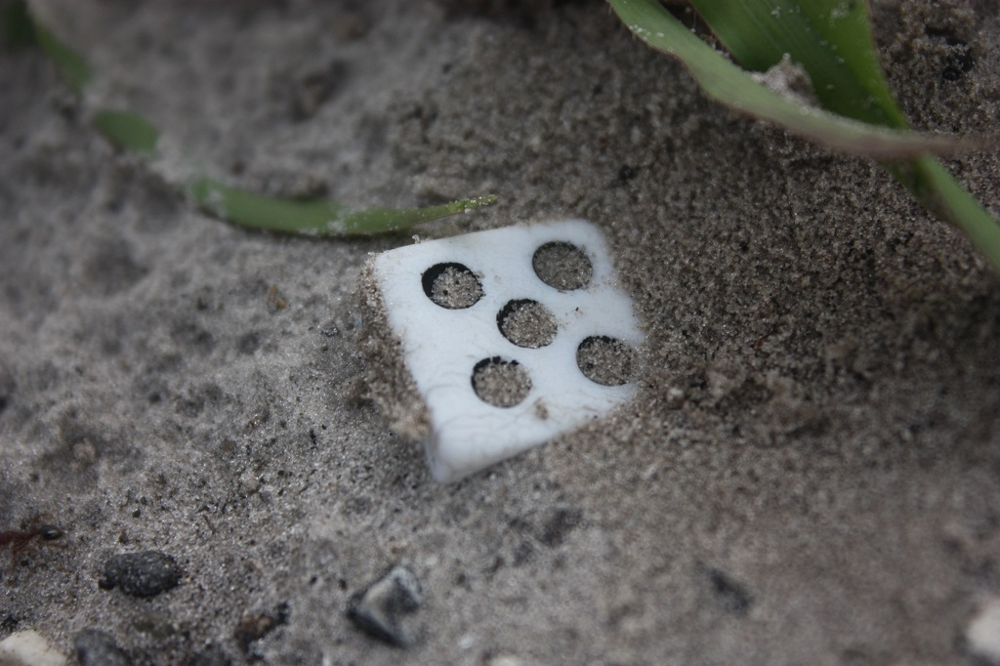

Intradependent modelling of carbon
Intradependent modelling of carbon with NIR spectra

Talk summary
Global soil carbon projects
Carbon models
MCMC
Intradependent carbon models
Carbon projects around the world
RaCA
National Soil Carbon Program
Existing carbon models used on spectra
Empirical models
Multiple linear regression
Boosted regression trees
Partial Least Squares
Principal Component Regression
But what if our models don't make sense?
Traditional modelling
Traditionally, empirical modelling has a singular goal:
To
Goals
To predict soil qualities primarily carbon